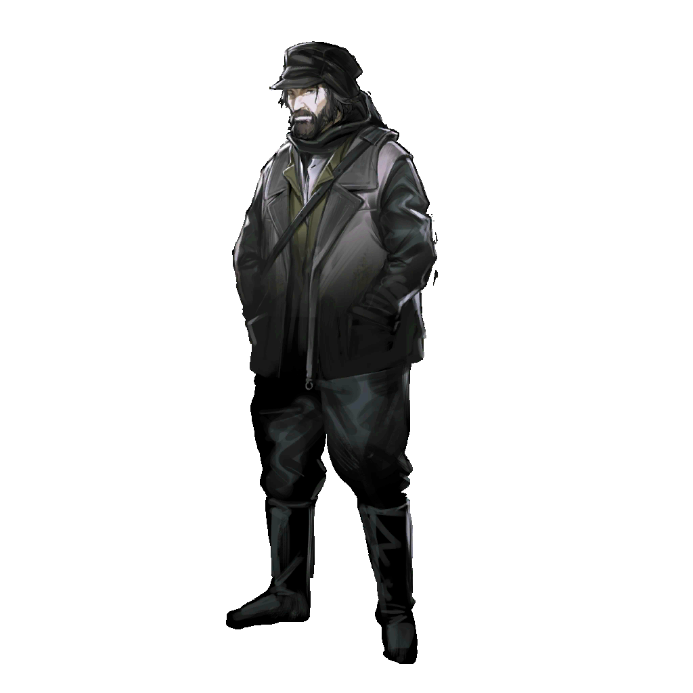
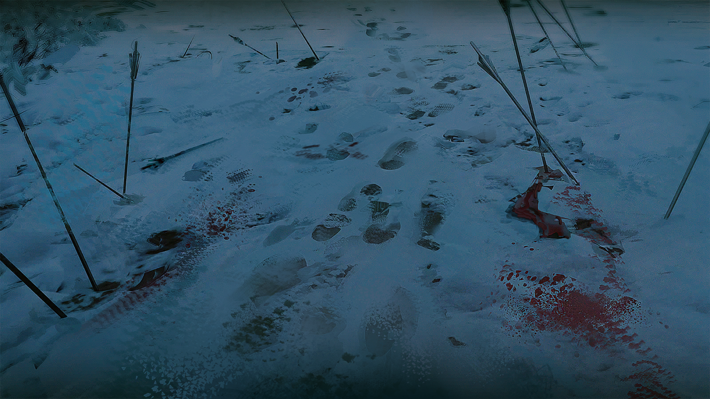

雷德
当心！
爆炸产生的碎石如雨点般落下，顷刻间，雷德的周遭已经被火光包围。
对面火力并不算充沛，却异常狡猾。弩箭和法术交替覆盖，截断了雷德的每一条退路。

奥妮拉
雷德！你还好吗？
雷德
这些人都是硬茬，不好对付——
雷德
用源石技艺掩护我，我去解决他们的火力点。
奥妮拉
……好！
年轻的术师顿了顿，农庄的那些训练一帧帧闪过脑海，内心已经没有留给恐惧的位置了。
她站直了身子，举起右手，准备朝着飞来的箭矢与炮弹施展源石技艺。
眼前的空气变得扭曲，背后流下涔涔汗水，就连乌萨斯的冬夜也变得温暖……热浪阵阵袭来，仿佛一面无形的火墙挡在这片阵地中央。
对面的攻势终于弱了下来。
雷德
干得漂亮，奥妮拉，你又进步了。
奥妮拉
……不不不，雷德！
奥妮拉
这不是我的源石技艺！
雷德
……什么？
雷德注意到了，周围的空气越来越热，本该是冷极了的冬夜，此刻炽热更胜过盛夏的正午。
空中划过的炮弹与箭矢尽数融化成铁水，接着点燃了地上的枯草，半个战场瞬间化作火海。
战壕里的人慌忙调转重弩与炮口，却接二连三地喊叫着丢掉了武器——那些金属外壳已变得滚烫灼人，青烟正从扳机处丝丝冒起。
在反应过来是怎么回事的同时，雷德眼看着那道熟悉的身影降临在战场上。即使是作为同伴，雷德也不由得感到一丝心悸。
离开泽尔格勒后，自己已经很久没有看到这位德拉克如此愤怒的模样。
雷德
……塔露拉！

塔露拉
米拉娜告诉我你们可能遭遇了集团军的突袭，希望我没有来迟。
塔露拉
雷德，你先带着年轻人后撤，剩下的交给我。
雷德
等一下！他们应该不是——
而在那道身影四周，更多的人无声浮现。他们冷静地举起武器，逼近已丧失反抗能力的队伍。
战壕后的众人纷纷弃了武器，举起双手，蹲了下去。
塔露拉手持望远镜，看清了那些人身上的袖标与衣服上十字交叉的图案。她也不禁愕然。
整合运动。

塔露拉
你们为什么——

？？？
你们……
？？？
也是整合运动？

卡德尔
……可以叫我卡德尔，第七集团军的前会计，直到变成了这样。
他举起自己的左手，露出金属做的指节，它们互相碰撞，发出阵阵响声。
卡德尔
如你所见，我们的队伍来自乌炎边境，大多是一些退伍士兵还有被迫害的感染者村民。
卡德尔
半个月前我们和第七集团军的驻军打了一架，损失惨重，正发愁接下来的去向，有一位感染者给我们指了路，让我们来乌卡边境的农庄。
卡德尔
我们走了很久，大概是两天前来到了这里。但是等我们到的时候听说那边的农庄已经被集团军捣毁了。

卡德尔
之后我们只能在这里徘徊了，所幸结果是好的。很荣幸，我们终于遇见了你们，你们比我想象的还要强大，真了不起。

塔露拉
你们一直以来，都在用整合运动的旗号行动。
卡德尔
你还不知道吗？
卡德尔
如今在乌萨斯，从布列斯克到塔曼，整合运动是属于所有被压迫者的旗帜。这面旗帜给了我们团结在一起，变得勇敢的理由。
卡德尔
我们现在碰面了，这是一次伟大的会师。我们愿意尊奉您为领袖，请告诉我们，接下来该去哪里——
塔露拉
别回避问题。
塔露拉
我们检查了你们的物资，每一袋粮食上分明都有被抢夺来的痕迹。你们说半个月内没有与军队发生过战斗，但你们的武器上还沾着新的血。

塔露拉
你们不只是在与压迫者战斗，你们还将武器指向了谁？
卡德尔
关于这一点，我们有充分的理由为自己辩护。
卡德尔
没错，我们没有余力去仔细区分每一个刀下亡魂是不是死有余辜，唯一能确定的是，那些人在感染者和普通人的斗争里不站在我们这边。
卡德尔
但我们必须活下去，这是我们唯一的生路——谁有理由劝阻我们不能这样做？
塔露拉
荒谬……你们不是在斗争，斗士永远不会将刀剑指向更弱小的人，你们只是在用盲目的仇恨为自己的暴行辩护。

塔露拉
但整合运动不是暴徒……不会再是了。
塔露拉
我绝不会承认……我不会把你们当作整合运动的一部分。
卡德尔
……我明白了。你和我们偶遇的那位炎国感染者是一类人。
卡德尔
但她比你更能理解，我们为斗争付出的必要代价，才推荐我们来投奔你。
卡德尔
只可惜，你不像她想的那样“伟大”。

塔露拉
……推荐你来找我们的感染者？她告诉你名字了吗？
卡德尔
我不知道全名，但她称自己为“陈”。
塔露拉
——！

米拉娜
请等一下。
米拉娜
塔露拉，也许他们不是我们的同伴，但至少还是我们的同胞。
米拉娜
现在，我想先向你们打听一点情报。
米拉娜
你刚刚说，你们两天前就来到了这里，你们有没有听说第一集团军在这里驻军的消息？
卡德尔
当然。
卡德尔
我们在听说整合运动的农庄被集团军攻破后，立刻开始打听集团军的下一步动作。
卡德尔
最后得到的消息是，有一部分幸存者逃了出来，但立刻又被集团军围在了西边的山林里——大概有十几天的时间了。
米拉娜
包围圈的集团军大概有多少人？
卡德尔
我的情报不一定准确，在大概规模上，应该有三个兵团。

塔露拉
……
卡德尔
对了，我也想向你们打听一点情报——你们有没有听说，中央区的集团军又一次发生叛乱的事？

米拉娜
那又是怎么回事？
卡德尔
你们难道完全没有听说？是行军途中忘了派遣情报人员吗，这可绝对不应该。
卡德尔
消息是半个月前传来的，第二集团军背叛了圣骏堡，和第四集团军站到了一起。
卡德尔
我昨天还听到了最新的消息，有人说圣骏堡现在已经被攻破了。

米拉娜&塔露拉
什么？

西尔卡
可即使如此，这件事还是很奇怪。为什么在这个时候，整个乌萨斯范围内，如此集中地进行了一系列针对感染者的行动。
西尔卡
军事行动的目的可以简单，却不能只是出于首领的任性。我只能推测，是在更上层的位置，乌萨斯出了某些我们目前无法得知的问题。

九
就结果来看，我们现在是身处绝境了。

西尔卡
你还能想到任何可以改变局势的手段吗？
九
如果塔露拉的确收到了我们的求救信号，她应该已经在赶回来的路上了。

九
可是……
西尔卡
可这真的有用吗？你们应该也见识过了，现在我们这些感染者面对的，是一整支几乎全部动员的正规军。
西尔卡
而想要正面冲破他们的包围网……你们最好拥有一艘高速战舰。
西尔卡
更何况——雅罗米尔想要消灭你们只需要下达一个进军的军令，那你猜他为什么还没有这么做？
九
……他在等待一个能将所有整合运动一网打尽的时机。
九
对塔露拉来说，放弃这里的人，另寻出路才是最正确的选择。
西尔卡
你们现在有多少人？
九
眼下被困在这里的还有三千人，勉强还能算作战斗力的，不到十分之一。
九
在之前遭遇的那场突袭里，我们已经损失惨重。
西尔卡
那你们还有多少粮食？
九
三天前就吃光了。

西尔卡
……
西尔卡
集团军内的任何一位将领，在这种情况下选择投降，都不会被视作懦夫。

九
呵，对我们来说可从来没有这个选项。
九
我们不会坐以待毙的，更不能眼睁睁看着在外面的同伴落入集团军的陷阱。
九
我会组织一场突围，这是我们最后能做的事。

西尔卡
就凭你们现在这些人手？
九
再加上一点点战术。用你为我们提供的，关于集团军的情报，以及一些人的牺牲——换来另一些人突围的机会。
西尔卡
就算这样……最终又有多少人能活下来？
九
活一个，算一个。

西尔卡
……哈。
九
你成为感染者应该时间不长。

西尔卡
大概是在两个月前。
九
你知道这里的大部分感染者，预期寿命是多久吗？
九
不到三十个月。

九
死亡对我们来说不是一个问题，只是一个时间。
九
或许你还没有习惯自己的生命中存在一个倒计时，当你认清这一点的时候，对很多事的看法自然会转变的。
九
我们唯独不能接受自己的生命是在别人的玩弄下不明不白地结束。
九
这是整合运动在决定出发时，就再明确不过的事。
米拉娜
天快要亮了，塔露拉，你一直没有休息吗？
塔露拉
你不也是……
米拉娜
还有不少事要处理。我让卡德尔的队伍暂时安顿下来了，我们收缴了他们的武器，分给了他们一点食物。
米拉娜
我刚刚也花了一点时间来整理语言，我需要和你再好好聊一次。
塔露拉
你还是主张我们应该接纳这些人？
米拉娜
是的。
塔露拉
可你看到了，他们可以不择手段地将矛头指向普通人，他们的行径称得上是暴徒——
米拉娜
那么，我们应该审判他们吗？难道我们应该当众宣布他们的罪名，然后处死他们？
塔露拉
……
塔露拉
……不，我没有资格……我永远没有资格审判任何人。

米拉娜
我们的队伍现在依然是弱小的，比起我们想要实现的理想来说太过弱小。我们不应该错过任何一个可以壮大队伍的机会。
米拉娜
也许之后我们还会遇到许多次类似的情况，我们得学会和不完美的人共处。
塔露拉
……看来我们又要陷入争端了。

米拉娜
我不害怕争端，因为我很确定我们的理想是一样的。
塔露拉
……
米拉娜
我相信，每个人都有善良和理解彼此的能力。
米拉娜
但是当人们还在为填饱肚子而奔波，在被恐惧与屈辱支配时，还要让他们保持高尚，无疑是一种残忍的要求。
米拉娜
我们该做的，是把他们团结在一起，给他们食物，给他们装备……更重要的是，要给他们方向和勇气。
米拉娜
到了那个时候，我们才会知道，他们可以成为什么样的人。
塔露拉
我不确定……也许是在经历了许多事之后，我开始变得保守。
米拉娜
我并不是来指责你的，我只是向你坦诚地说明了我的观点，我也希望听到你最真实的想法。
塔露拉
米拉娜，我想了很久……
塔露拉
我听进去了你的建议，但我还是决定要去救九他们。

米拉娜
你很清楚，如果去打这一仗，我们会损失很多战士，我们可能会失败。
塔露拉
没错……
塔露拉
我们的斥候带回了情报，那些人说的几乎是准确的。大概三个兵团，均为正规军，没有临时征召的民兵。
塔露拉
我们现在的力量根本不可能正面与之对抗，但如果战术运用得当，我们还有机会为被困的同胞争取到逃生的机会。
米拉娜
可是我们现在联系不上被困的队伍，又怎么能实行计划？
塔露拉
请你相信，整合运动一起行动了很多年，我们有自己的默契。
米拉娜
即使是这样，你有多少把握？……不，我不该这样逼问你。
塔露拉
我们去泽尔格勒的时候带走了几乎所有的作战力量，因为我们相信，那里有正在受苦的同胞需要我们的帮助，我们不遗余力。
塔露拉
但此时此刻，另一批同胞同样是身陷绝境，我绝对做不到无动于衷。
塔露拉
我不能放弃，如果这一次我用“理性的判断”放弃了救援他们，将来我们还可以用相似的借口放弃很多事。
塔露拉
一支队伍只靠简单的取舍是走不到最后的，我们总会遇到这样的时候……我们只能全力以赴。
米拉娜
那么，我也同意这次的救援行动。
米拉娜
我会全力配合你，我的队伍也是。我答应过你，我们彼此不再有区分。
塔露拉
……谢谢你的理解，米拉娜。
米拉娜
为什么要感谢我呢？是你的观点说服了我。
米拉娜
我也认为，让跟随我们的人相信我们会为每一位同胞战斗到最后一刻，这也是必要的。

米拉娜
既然已经决定了，就让我们不遗余力地去做吧。
米拉娜
去吧，去拯救我们的同胞，就像我们一直以来做的那样。

严肃的男性
停下，暂时歇一会儿……
严肃的男性
我们走了多久？二队、三队的消息呢？

疑惑的女性
走的这三个多小时里，没人联系过我们。
数枚锋利的铁片自黑暗射出，瞬间贯穿了数人的肢体，肉体倒在雪地上的沉闷声接连不断。
严肃的男性
五点钟方向！举起武器！

？？？
没有施术单元，看来都是感染者。
？？？
……打个招呼吧，乌萨斯的渣滓们。
几名反抗者将唯一的年轻术师死死护在中间。有的人心中升起一丝侥幸——四对一，仍有机会。
疑惑的女性
我能烧死他！
严肃的男性
……不，快跑——
下一刻，青年动了。
他轻巧地折断飞来的箭矢，徒手击穿防线，毫不犹豫地掐断了那名年轻术师的脖颈。
几个呼吸间，一切便已结束。
这根本不能被称为处决。膝盖被贯穿的剧痛袭来，仅存的领头者终于绝望地跪倒在同伴的尸堆中。
严肃的男性
你就是那个女人说的，“斯韦特兰纳最忠实的爪牙”——
男人挣扎着，想摘下有些遮住了眼睛的帽子，好把眼前的人看得更清，结果却只是把身上属于自己的鲜血，更多地抹到了脸孔上。
到后面，他几乎什么也看不见了。
？？？
……
青年盯着他，既没有回答，也没有立刻将他杀死，反而蹲下身来，替他摘下了那徒劳地罩在头上的帽子，拿在手中掂了掂。
？？？
看来有谁提起过我。
？？？
……原来如此。那个把泽尔格勒搅得天翻地覆的第四集团军逃兵，最后竟然逃到了这里。
？？？
不过，也算是意料之中。
严肃的男性
咳、咳——
？？？
你们跟随的是整合运动？还是那个……叫希尔达的卡特斯？
严肃的男性
你这样的刽子手……是不会明白——

？？？
算了，都无所谓了。
？？？
……

谨慎的步兵
这……
谨慎的步兵
队长，是不是至少应该留一个活口，问问情报——

严肃的步兵
住嘴吧。
严肃的步兵
队长行事，自然有他的道理。
毫发无伤的青年站在雪地上，站在散落的尸体中央。他久久地望着北方。
在被树林遮挡的更远处，地平线的两端被群山占据。荒野广阔，那片茫远的土地上看不见任何逃窜者的踪迹。
谨慎的步兵
队长？
？？？
我们的任务是什么？
谨慎的步兵
消灭敌人。
？？？
是的。“消灭敌人，一个不留。”
？？？
至于情报，我们还有很多别的方式能获取，不是吗？
谨慎的步兵
……是。

？？？
对啦。所以就别再纠结了。现在，像往常一样，清扫现场。
谨慎的步兵
是！
？？？
嗯，然后就尽快收队吧。
？？？
算上今天这次，已经有四支斥候小队与我们“发生冲突”了，而且都是用来探路的弃子。
？？？
看来他们真的躲不下去了，想要冲出包围圈。这已经是足够有效的消息。
？？？
对了，把这几具尸体，送到足够显眼的地方，好让剩下的人能看清楚。
？？？
无论他们挣扎与否，这就是他们最终的下场。
斯韦特兰纳
……你做得很好，雅罗米尔上尉。
斯韦特兰纳
接下来，只需要继续封死他们的退路，那些感染者就会自乱阵脚，甚至不必我们直接出手了。
斯韦特兰纳
我将调遣周围驻兵的权力交给你，尽快处理完这件事，然后带队回到维亚特诺，到中心驻地，到我身边来。
雅罗米尔
……您为我安排了别的任务？
斯韦特兰纳
中央区近来发生的动荡，想必你已经了解。

雅罗米尔
……
斯韦特兰纳
变故已经不可逆转。显然，在这样的情况下，我对整个第一集团军都会另有安排。
斯韦特兰纳
越是动荡，我们越应该更紧密地团结，不给任何潜藏的敌人可乘之机。
雅罗米尔
可是，如果这群感染者里没有希尔达呢？我离开之后，谁来负责继续追捕害死阿纳托利的凶手？
雅罗米尔
恕我直言，总司令阁下。从隐秘行动的角度出发，我不认为有谁比我更适合这个任务——
斯韦特兰纳
雅罗米尔。

雅罗米尔
总司令？
斯韦特兰纳
阿纳托利就要下葬了。你还没有到维亚特诺来见过他，是不是？

雅罗米尔
……
雅罗米尔
……我明白了。
雅罗米尔
我会尽快完成任务，然后带队返回中心驻地。
斯韦特兰纳
嗯。
斯韦特兰纳
你一直是个优秀的孩子，我相信你，阿纳托利也是如此。
斯韦特兰纳
你不会令我失望的。
阿纳托利
雅罗米尔，你这家伙！
阿纳托利
母亲让你带队去边境，你要去杀那些不安分的卡西米尔人了，是不是？
雅罗米尔
嗯？你听说了啊，我还没想好怎么告诉你呢。
阿纳托利
你打算不告而别。
雅罗米尔
又不是一辈子都不会回来了。再说了，这是军令。
阿纳托利
不安分的人是杀不完的。
雅罗米尔
不是这么算的，阿纳托利。
阿纳托利
所以，除了这些，你就没什么要跟我说的了吗？
雅罗米尔
这话难道不应该是我跟你说吗？要走的人可是我啊。
阿纳托利
行啊，你想要我说什么？
雅罗米尔
……你突然这么问，我一时也想不起来。
雅罗米尔
总之，看来我又先你一步了，阿纳托利。
阿纳托利
哼，别得意。能留在母亲身边更好，我迟早会赶上你的。
阿纳托利
我不仅会赶上你，还会比你更早成为配得上“将军”这头衔的……真正的乌萨斯军人。
阿纳托利
等着瞧吧。
雅罗米尔
……
雅罗米尔
好啊，那我就等着那一天了。
雅罗米尔
（低声）这回你倒是的确先我一步了。
雅罗米尔
……希尔达……
雅罗米尔
源石技艺再怎么神奇，你带领着的，也不过是一群最卑鄙的感染者流民罢了。

雅罗米尔
我一定会抓住你，撕碎你，连同你那可耻的骗局一起。
九
……
西尔卡
没错……这一定是雅罗米尔的手笔。
西尔卡
这是他的恐吓信，是他下的战书。
雪越来越大了，天空中的浓云越积越厚，隐约透出暗黄色的光。
这样的景象对感染者来说再熟悉不过，那是天灾的前兆。

可站在这里的人们已经不再害怕，因为比起远处的天灾，饥饿和疲惫才是随时会致命的威胁。
所以当他们看到地上成排的、死状凄惨的同伴尸体时，几乎不再悲伤。
他们已经疲于感到悲伤，他们甚至没有力气再愤怒。

整合运动战士
九……
整合运动战士
说点什么吧……求你了……
九
……他们想把我们困死在这里，他们宣判我们没有在这片大地上存活下去的权利。

九
我们不会投降，绝不。
九
我们会站着抗争，一直抗争，直到夺回本该属于我们的一切。
九
我们没办法带走每一个同伴……还活着的人，我会带你们离开。
九
我们一定……会离开这里……
九俯下身，用手轻抚积雪。紧接着，围绕着同伴的遗体，雪地里开出了朵朵白色的花。
雪继续下着，直到白色掩埋了一切。